Introducción
Electronics as science
La electrónica es una ciencia y, además, una ciencia muy accesible. En otras áreas de estudio científico, generalmente se requiere equipo costoso para realizar experimentos no triviales. No ocurre lo mismo con la electrónica. Se pueden explorar muchos conceptos avanzados utilizando piezas y equipos por un valor total inferior a unos pocos cientos de dólares estadounidenses. Esto es bueno, porque la experimentación práctica es vital para adquirir conocimientos científicos sobre cualquier tema.
Cuando comencé a escribirLecciones en circuitos eléctricos, mi intención era crear un libro de texto adecuado para uso universitario introductorio. Sin embargo, como soy mayormente autodidacta en electrónica, conocía el valor de un buen libro de texto para los aficionados y experimentadores que no están inscritos en ningún curso formal de electrónica. Muchas personas ofrecieron desinteresadamente su tiempo y experiencia para ayudarme a aprender electrónica cuando era más joven, y mi intención es honrar su servicio y amor devolviendo al mundo lo que ellos me dieron a mí.
Para que alguien pueda aprender por sí mismo una ciencia como la electrónica, debe participar en la experimentación práctica. El conocimiento obtenido únicamente de los libros tiene un uso limitado, especialmente en actividades científicas. Para que mi contribución a la sociedad sea completa, debo incluir una guía de experimentación junto con el/los texto(s) de teoría, para que el individuo que aprende por sí solo tenga un recurso que oriente sus aventuras experimentales.
Un curso formal de laboratorio para estudios universitarios de electrónica requiere una enorme cantidad de trabajo de preparación y, por lo general, debe basarse en piezas y equipos específicos para que los experimentos sean lo suficientemente detallados y con resultados lo suficientemente precisos como para permitir una comparación rigurosa entre los datos experimentales y teóricos. Un proceso de evaluación, articulado a través de un instructor cualificado, también es vital para garantizar que se ha producido un determinado nivel de aprendizaje. La revisión por pares (comparación de resultados experimentales con el trabajo de otros) es otro componente importante del estudio de laboratorio a nivel universitario y ayuda a mejorar la calidad del aprendizaje. Dado que no puedo cumplir con estos criterios a través de un libro, no me resulta práctico presentar aquí un curso de laboratorio completo. Con el fin de mantener esta guía de experimentos a un costo razonablemente bajo para que la gente la siga y práctica para su implementación a través de Internet, me veo obligado a diseñar los experimentos a un nivel más bajo de lo que se esperaría para un curso de laboratorio universitario.
Los experimentos de este volumen comienzan en un nivel apropiado para alguien sin conocimientos de electrónica y avanzan a niveles superiores. Hacen hincapié en el conocimiento cualitativo sobre el cuantitativo, aunque podrían servir como modelos para cursos más rigurosos. Si hay alguna porción deLecciones en circuitos eléctricosque quedará "incompleto", es éste: tengo toda la intención de seguir añadiendo experimentosindefinidamentepara proporcionar al experimentador o aficionado una gran cantidad de ideas para explorar la ciencia de la electrónica. Este volumen de la serie de libros también es el más fácil al que pueden contribuir aquellos que quieran ayudarme a proporcionar información gratuita a las personas que aprenden sobre electrónica. No requiere un gran esfuerzo describir uno o dos experimentos, y con gusto lo incluiré si me lo envías por correo electrónico, dándote todo el crédito por el trabajo. Consulte el Apéndice 2 para obtener detalles sobre cómo contribuir a este libro.
Al realizar estos experimentos, siéntase libre de explorar probando diferentes técnicas de medición y construcción de circuitos. Si algo no funciona como debería funcionar como lo describe el texto, ¡no te rindas! Probablemente se deba a un problema simple en la construcción (cable suelto, valor incorrecto del componente) o en la configuración del equipo de prueba. Puede ser frustrante resolver estos problemas por su cuenta, pero el conocimiento adquirido al "solucionar problemas" de un circuito usted mismo es al menos tan importante como el conocimiento adquirido mediante un experimento que funcione correctamente. Ésta es una de las razones más importantes por las que la experimentación es tan vital para su educación científica: los problemas reales que invariablemente encontrará en la experimentación lo desafían a desarrollar habilidades prácticas para la resolución de problemas.
En muchos de estos experimentos, ofrezco números de pieza para componentes de la marca Radio Shack. Esto no es un respaldo a Radio Shack, sino simplemente una referencia conveniente a una empresa de suministros electrónicos muy conocida en Norteamérica. Muchas veces, se pueden obtener componentes de mejor calidad y precio más bajo a través de empresas de venta por correo y otras casas de suministro menos conocidas. Recomiendo encarecidamente que los experimentadores obtengan algunos de los componentes más caros, como los transformadores (consulte el capítulo sobre CA), recuperándolos de aparatos eléctricos desechados, tanto por razones económicas como ecológicas.
Todos los experimentos que se muestran en este libro están diseñados teniendo en cuenta la seguridad. Es casi imposible recibir una descarga eléctrica o lastimarse de otro modo con experimentos que funcionan con baterías u otros circuitos de bajo voltaje. Sin embargo, los peligrosdoExiste construyendo cualquier cosa con tus propias manos. Cuando hay un nivel de peligro mayor de lo normal en un experimento, me esfuerzo por dirigir la atención del lector hacia él. Sin embargo, lamentablemente es necesario en esta sociedad litigiosa renunciar a toda responsabilidad por el resultado de cualquier experimento aquí presentado. Ni yo ni ninguno de mis colaboradores asumimos responsabilidad por las lesiones resultantes de la construcción o el uso de cualquiera de estos proyectos, del mal manejo de la electricidad por parte del experimentador o de cualquier otra práctica insegura que provoque lesiones.¡Realice estos experimentos bajo su propia responsabilidad!
Setting up a home lab
Para construir los circuitos descritos en este volumen, necesitará una pequeña área de trabajo, así como algunas herramientas y suministros críticos. Esta sección describe la configuración de un laboratorio de electrónica doméstica.
Work area
Un área de trabajo debe consistir en un banco de trabajo, escritorio o mesa grande (preferiblemente de madera) para realizar el ensamblaje del circuito, con energía eléctrica doméstica (120 voltios CA) fácilmente accesible para alimentar equipos de soldadura, fuentes de alimentación y cualquier equipo de prueba. Los escritorios económicos destinados al uso de ordenadores funcionan muy bien para este propósito. Evite un escritorio con superficie metálica, ya que la conductividad eléctrica de una superficie metálica crea un riesgo de descarga eléctrica y la posibilidad muy clara de que se desarrollen "cortocircuitos" involuntarios cuando los componentes del circuito tocan la superficie metálica de la mesa. Se deben evitar las superficies de los bancos de vinilo y plástico por su capacidad de generar y almacenar grandes cargas eléctricas estáticas, que pueden dañar los componentes electrónicos sensibles. Además, estos materiales se derriten fácilmente cuando se exponen a soldadores calientes y gotas de soldadura fundida.
Si no puede conseguir un banco de trabajo con superficie de madera, puede convertir cualquier tipo de mesa o escritorio en uno colocando un trozo de madera contrachapada encima. Si tiene habilidades razonables con las herramientas para trabajar la madera, puede construir su propio escritorio con madera contrachapada y tablas de 2x4.
El área de trabajo debe estar bien iluminada y ser cómoda. Tengo una pequeña radio instalada en mi propia mesa de trabajo para escuchar música o noticias mientras experimento. Mi propio banco de trabajo tiene un receptáculo de "regleta" y un conjunto de interruptor montado en la parte inferior, en el que conecto todos los dispositivos de 120 voltios. Es conveniente tener un solo interruptor para apagarall¡Energía en caso de cortocircuito accidental!
Tools
Se requieren algunas herramientas para el trabajo electrónico básico. La mayoría de estas herramientas son económicas y fáciles de obtener. Si desea mantener el costo lo más bajo posible, es posible que desee buscarlos en tiendas de segunda mano y casas de empeño antes de comprarlos nuevos. Como puedes ver en las fotografías, algunas de mis herramientas son bastante antiguas pero, aun así, funcionan bien.
Lo primero y más importante en su colección de herramientas es un multímetro. Este es un instrumento eléctrico diseñado para medir voltaje, corriente, resistencia y, a menudo, también otras variables. Los multímetros se fabrican en ambosdigital y cosa análogaforma. Se prefiere un multímetro digital para trabajos de precisión, pero los medidores analógicos también son útiles para obtener una comprensión intuitiva de la sensibilidad y el alcance del instrumento.
Mi propio multímetro digital es un Fluke modelo 27, comprado en 1987:
multímetro digital
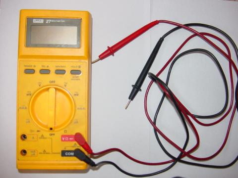
La mayoría de los multímetros analógicos que se venden hoy en día son bastante económicos y no necesariamente instrumentos de prueba de precisión. Recomiendo tener tipos de medidores digitales y analógicos en su colección de herramientas, gastar la menor cantidad de dinero posible en el multímetro analógico e invertir en un multímetro digital de buena calidad (recomiendo encarecidamente la marca Fluke).
========================================
Un instrumento de prueba que he encontrado indispensable en mi trabajo a domicilio es undetector de voltaje sensible, odetector de audio sensible, descrito en experimentos casi idénticos en dos capítulos de este volumen de libro. No es más que un par de auriculares de audio sensibilizados, equipados con un atenuador (control de volumen) y diodos limitadores para limitar la intensidad del sonido de señales fuertes. Su finalidad es indicar de forma sonora la presencia de señales de tensión de baja intensidad, CC o CA. A falta de un osciloscopio, esta es una herramienta muy valiosa porque le permiteescuchara una señal electrónica y, por tanto, determinar algo de su naturaleza. ¡Pocas herramientas generan una comprensión intuitiva de la frecuencia y la amplitud como ésta! Cito su uso en muchos de los experimentos que se muestran en este volumen, por lo que le recomiendo encarecidamente que construya el suyo propio. Sólo superado por un multímetro, es el equipo de prueba más útil en la colección del experimentador de electrónica económica.
Detector sensible de voltaje/audio
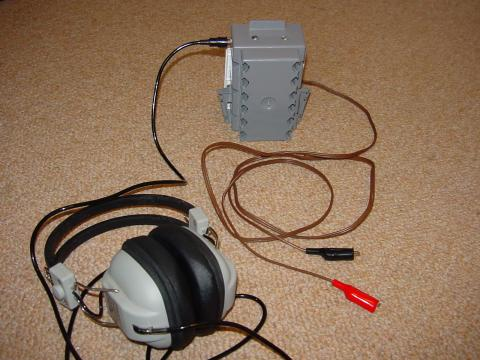
Como puede ver, construí mi detector usando piezas de desecho (interruptor eléctrico doméstico/caja de receptáculo para el gabinete, sección de cable de lámpara marrón para los cables de prueba). Incluso algunos de los componentes internos se rescataron de la chatarra (el transformador reductor y el conector para auriculares se tomaron de una radio vieja, comprada en condiciones que no funcionaban en una tienda de segunda mano). Todo el conjunto, incluidos los auriculares comprados de segunda mano, no costó más de 15 dólares. Por supuesto, se podría tener mucho más cuidado al elegir los materiales de construcción (caja de metal, cable de sonda de prueba blindado), pero probablemente esto no mejoraría significativamente su rendimiento.
El componente más influyente con respecto a la sensibilidad del detector es el conjunto de auriculares: en términos generales, cuanto mayor sea la clasificación "dB" de los auriculares, mejor funcionarán para este propósito. Dado que no es necesario modificar los auriculares para usarlos en el circuito detector y se pueden desconectar de él, podría justificar la compra de auriculares más caros y de alta calidad usándolos como parte de un sistema de entretenimiento doméstico (audio/vídeo).
========================================
También es esencial unplaca sin soldadura, a veces llamado untablero de prototipos, oprotoplaca. Este dispositivo le permite unir rápidamente componentes electrónicos entre sí sin tener que soldar terminales y cables de componentes.
Placa de pruebas sin soldadura

========================================
Cuando trabaje con cables, necesitará una herramienta para "quitar" el aislamiento de plástico de los extremos de modo que el metal de cobre desnudo quede expuesto. Esta herramienta se llamapelacables, y es una forma especial de alicates con varios orificios con forma de cuchillo en el área de la mandíbula del tamaño perfecto para cortar el aislamiento de plástico y no el cobre, para una multitud de tamaños de cables, omedidores. Aquí se muestran dos tamaños diferentes de alicates pelacables:
Alicates pelacables
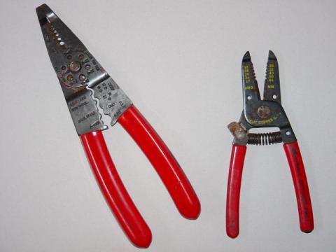
========================================
Para realizar conexiones rápidas y temporales entre algunos componentes electrónicos, necesitacables de puentecon pequeños clips de "mandíbula de cocodrilo" en cada extremo. Estos se pueden comprar completos o ensamblados con clips y cables.
Cables de puente (vendidos por Radio Shack)
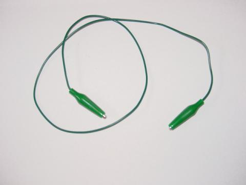
Cables de puente (hechos en casa)
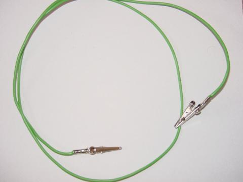
Se pueden usar cables de puente hechos en casa con pinzas de cocodrilo grandes y sin aislamiento (de metal desnudo), siempre y cuando se tenga cuidado de evitar cualquier contacto involuntario entre las pinzas desnudas y cualquier otro cable o componente. Para uso en circuitos de placas de prueba abarrotados, se prefieren los cables de puente con clips aislados (cubiertos de goma) como el puente que se muestra en Radio Shack.
========================================
Alicates de punta finaestán diseñados para agarrar objetos pequeños y son especialmente útiles para empujar cables dentro de los orificios difíciles de la placa de pruebas.
Alicates de punta fina
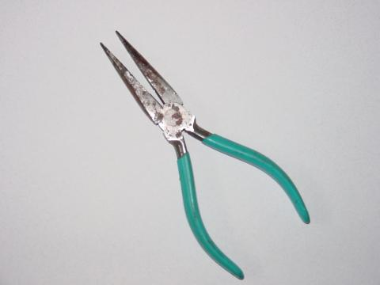
========================================
Ningún juego de herramientas estaría completo sin destornilladores, y recomiendo un par complementario (ranurado de 3/16 de pulgada y Phillips n.° 2) como punto de partida para su colección. Es posible que más adelante le resulte útil invertir en un conjunto dedestornilladores de joyeropara trabajos con tornillos muy pequeños y ajustes de cabeza de tornillo.
Destornilladores
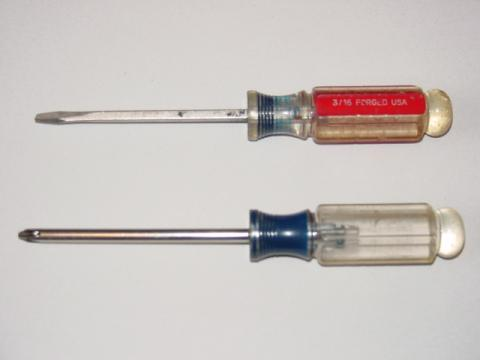
========================================
Para proyectos que involucran ensamblaje o reparación de placas de circuito impreso, un pequeño soldador y un carrete de soldadura con "núcleo de resina" son herramientas esenciales. Recomiendo un soldador de 25 vatios, no más grande para trabajos con placas de circuito impreso, y la soldadura más delgada que pueda encontrar.¡No utilice soldadura de "núcleo ácido"!La soldadura de núcleo ácido está destinada a soldar tubos de cobre (plomería), donde una pequeña cantidad de ácido ayuda a limpiar el cobre de impurezas de la superficie y proporciona una unión más fuerte. Si se utiliza para trabajos eléctricos, el ácido residual provocará la corrosión de los cables. Además, debes evitar la soldadura que contenga metal.dirigir, optando en su lugar por soldadura de aleación de plata. Si aún no usa anteojos, se recomienda encarecidamente un par de gafas de seguridad mientras suelda, para evitar que trozos de soldadura fundida caigan accidentalmente en su ojo en caso de que un cable se suelte de la unión durante el proceso de soldadura y arroje trozos de soldadura hacia usted.
Soldador y soldadura ("núcleo de colofonia")
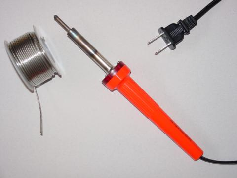
========================================
Los proyectos que requieran unir cables grandes mediante soldadura necesitarán una fuente de calor más potente que un soldador de 25 vatios. una soldaduragunes una opción práctica.
pistola de soldar
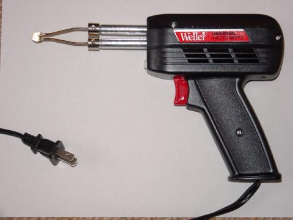
========================================
Los cuchillos, al igual que los destornilladores, son herramientas imprescindibles para todo tipo de trabajos. Por motivos de seguridad, recomiendo un cuchillo "utilitario" con hoja retráctil. También es ventajoso tener estos cuchillos por su capacidad para aceptar hojas de repuesto.
cuchillo utilitario
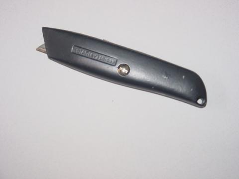
========================================
Los alicates que no sean de punta fina son útiles para el montaje y desmontaje del chasis de dispositivos electrónicos. Dos tipos que recomiendo sonjunta deslizante y articulación ajustable("Bloqueo de canal").
Alicates para juntas deslizantes
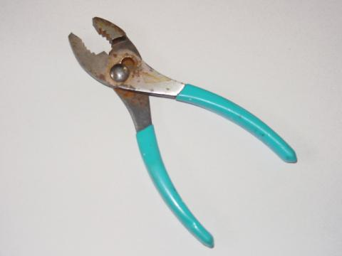
Alicates para juntas ajustables
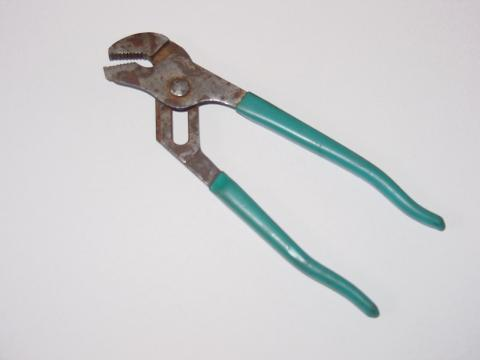
========================================
Es posible que se requiera perforación para el montaje de proyectos grandes. Aunque los taladros eléctricos funcionan bien, he descubierto que un simple taladro de manivela hace un trabajo extraordinario al perforar plástico, madera y la mayoría de los metales. Sin duda, es más seguro y silencioso que un taladro eléctrico y cuesta bastante menos.
taladro de mano
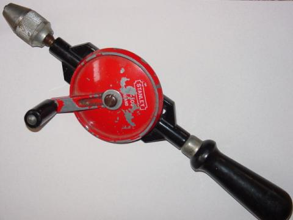
Como indica el desgaste de mi taladro, ¡es una herramienta que uso con frecuencia en mi casa!
========================================
Algunos experimentos requerirán una fuente de señales de voltaje de audiofrecuencia. Normalmente, este tipo de señal se genera en un laboratorio de electrónica mediante un dispositivo llamadogenerador de señal or generador de funciones. Si bien construir un dispositivo de este tipo no es imposible (¡ni difícil!), a menudo requiere el uso de un osciloscopio para realizar ajustes, y los osciloscopios generalmente están fuera del alcance presupuestario del experimentador doméstico. Una alternativa relativamente económica a un generador de señales comercial es unteclado electrónicodel tipo musical. No es necesario ser músico para operar uno con el fin de generar una señal de audio (¡basta con presionar cualquier tecla del tablero!), y se pueden conseguir fácilmente en tiendas de segunda mano por un precio sustancialmente menor que el de los nuevos. La señal electrónica generada por el teclado se conduce a su circuito a través de un cable de auriculares conectado al conector "auriculares". Se pueden encontrar más detalles sobre el uso de un "teclado musical como generador de señales" en el experimento del mismo nombre en el capítulo 4 (AC).
Supplies
El cable utilizado en las placas de prueba sin soldadura debe ser de cobre sólido de calibre 22. Los carretes de este cable están disponibles en tiendas de suministros electrónicos y en algunas ferreterías, en diferentes colores de aislamiento. El color del aislamiento no influye en el rendimiento del cable, pero a veces son útiles diferentes colores para "codificar por colores" las funciones de los cables en un circuito complejo.
Carrete de alambre de cobre macizo calibre 22
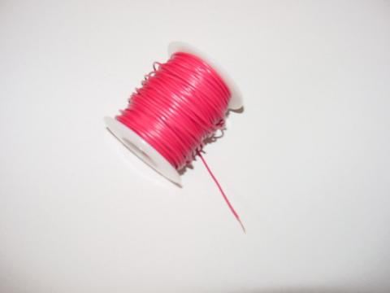
Observe cómo el último 1/4 de pulgada aproximadamente del cable de cobre que sobresale del carrete ha sido "despojado" de su aislamiento plástico.
========================================
Una alternativa a la construcción de circuitos de placa de pruebas sin soldadura esenvoltura de alambre, donde un cable de cobre sólido de calibre 30 (¡muy delgado!) se enrolla firmemente alrededor de los terminales de los componentes insertados a través de los orificios de una placa de fibra de vidrio. No se requiere soldadura y las conexiones realizadas son al menos tan duraderas como las conexiones soldadas, tal vez más. Para envolver cables se requiere un carrete de este alambre muy delgado y una herramienta especial para envolver, la más simple se parece a un pequeño destornillador.
Alambre para enrollar alambre y herramienta para envolver
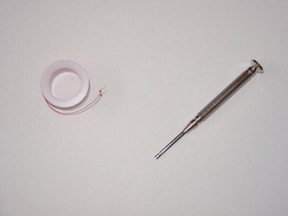
========================================
Es posible que se necesiten cables grandes (calibre 14 y más grandes) para construir circuitos que transporten niveles significativos de corriente. Aunque se pueden comprar cables eléctricos de prácticamente cualquier calibre en carretes, he encontrado una fuente muy económica de cables de cobre trenzados (flexibles) disponibles en cualquier ferretería: cables de extensión baratos. Los cables de extensión, que normalmente se componen de tres cables de color blanco, negro y verde, a menudo se venden a precios inferiores al costo minorista del cable constituyente solo. ¡Esto es especialmente cierto si el cable se compra en oferta! Además, un cable de extensión le proporciona un par de conectores de 120 voltios: macho (enchufe) y hembra (receptáculo) que pueden usarse para proyectos alimentados por 120 voltios.
Cable de extensión, en paquete
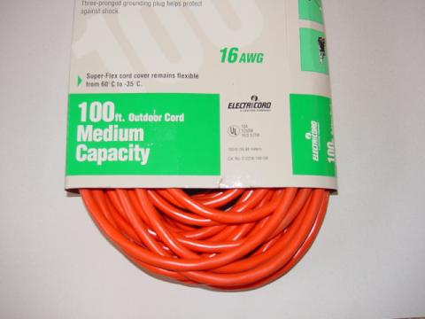
Para extraer los cables, corte con cuidado la capa exterior de aislamiento de plástico con un cuchillo. Con práctica, es posible que descubras que puedes quitar el aislamiento exterior haciendo un atajo en un extremo del cable, luego agarrando los cables con una mano y el aislamiento con la otra y separándolos. Por supuesto, esto es mucho preferible a cortar toda la longitud del aislamiento con un cuchillo, tanto por motivos de seguridad como para evitar cortes en el aislamiento de los cables individuales.
========================================
Durante el proceso de construcción de muchos circuitos, acumulará una gran cantidad de componentes pequeños. Una técnica para mantener estos componentes organizados es guardarlos en una caja "organizadora" de plástico como las que se utilizan para los aparejos de pesca.
Caja de componentes
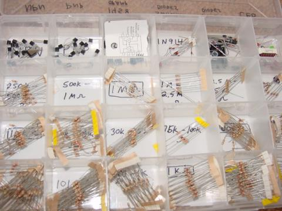
En esta vista de una de mis cajas de componentes, puede ver muchas resistencias de 1/8 de vatio, transistores, diodos e incluso algunos circuitos integrados ("chips") de 8 pines. Las etiquetas para cada compartimento se realizaron con un marcador de tinta permanente.
Colaboradores
Los contribuyentes a este capítulo se enumeran en orden cronológico de sus contribuciones, desde el más reciente hasta el primero. Consulte el Apéndice 2 (Lista de colaboradores) para fechas e información de contacto.
Michael Warner(9 de abril de 2002): Sugerencias para una sección que describa la configuración del laboratorio doméstico.
Lecciones en circuitos eléctricoscopyright (C) 2002-2023 Tony R. Kuphaldt, según los términos y condiciones delCC BY License.